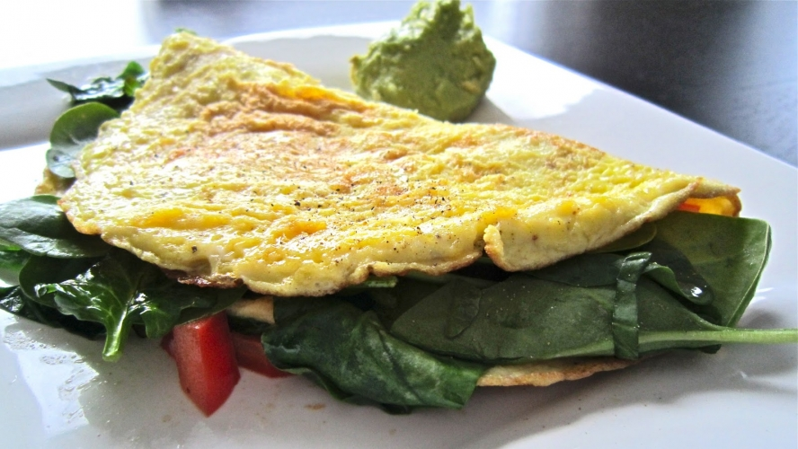

Home
Breakfast Omlette

Turkey Protein Omlette
The turkey omlette is a staple in my protein intake of the day. Coming in at around 360 calories and 35 grams of protein, I typically ate it once a day on my weight loss
journey in 2024. The omlette is fairly simple to make as it only requires a few ingredients and a little bit of time. Although its called the breakfast omlette, I
typically made it the most for dinner instead of breakfast.
Ingredients
- 95g of Egg Whites
- Non Stick Cooking Spray
- 60g Ground Turkey
- Spinach
- Gochujang Sauce
- 28g Shredded Mozarella Cheese
Steps
- Season your grounded turkey with any seasoning you want. I will season with 10g of Gochujang sauce
- Spray your non stick cooking spray on a pan
- Cook your ground turkey until fully cooked
- Once turkey is cooked, add your spinach
- After 1 minute to let the spinach shrivel a bit, pour your egg whites into the pan
- Once your egg whites starts to bubble over, add your string cheese on top and fold your omlette in half
- After 1 minute on one side, flip your omlette to cook on the other side
- Aafter 1 minute, your omlette should be ready to serve and eat :)